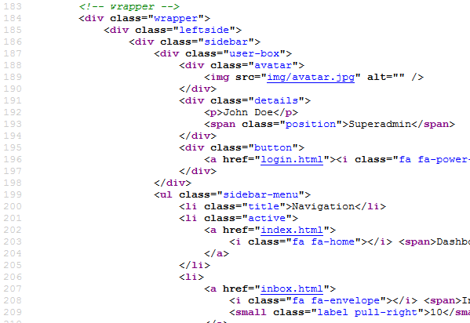

Created: 23/02/2015
By: YAKUZI
Email: info@yakuzi.eu
Thank you for purchasing my theme. If you have any questions that are beyond the scope of this help file, please feel free to email via my user page contact form here. Thanks so much!
This theme is a responsive layout with four+ columns. All of the information within the main content area is nested within a div with an class of "wrapper". The sidebar's content is within a div with an id of "sidebar". Here is the structure.
I'm using more than twenty CSS files in this theme.
The file is separated into sections using:
/*** /* Basic -------------------------------------------------- */
If you would like to edit a specific section of the site, simply find the appropriate label in the CSS file, and then scroll down until you find the appropriate style that needs to be edited.
This theme imports more than twenty five Javascript files from plugins folder.
$('.sidebar-toggle').click( function() {
$("body").toggleClass("sidebar-sm");
$(".leftside, header .logo").toggleClass("display-inline");
return false;
});
Icons used:
Fonts used:
Once again, thank you so much for purchasing this theme. As I said at the beginning, I'd be glad to help you if you have any questions relating to this theme. No guarantees, but I'll do my best to assist. If you have a more general question relating to the themes on ThemeForest, you might consider visiting the forums and asking your question in the "Item Discussion" section.
YAKUZI